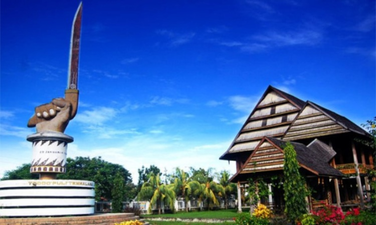

SEJARAH TENTANG PALOPO
Istana Langkanae Luwu, Tujuan Wisata Sejarah Terbaik di Palopo

Ketika singgah di Palopo, pengunjung tak hanya dimanjakan dengan pesona alam ataupun kulinernya semata. Jangan lupa bahwa Indonesia juga dikenal dengan kebudayaan yang beragam, dan salah satunya bisa ditemukan disini. Untuk itulah, sempatkan diri untuk mengunjungi tempat wisata sejarah bernama istana Langkanae Luwu. Apa yang membuat istana ini begitu istimewa ? Mari simak ulasan singkat berikut.
Sejarah Singkat Tentang Istana Langkanae Luwu

Bangunan megah nan cantik yang berpusat di kota Palopo ini, telah dibangun oleh pemerintah Kolonial Belanda pada tahun 1920 an di atas tanah bekas Saoraja. Sebelum lebih cantik seperti sekarang, dahulunya bangunan ini terbuat dari kayu dan dihiasi dengan tiang berjumlah 88 buah. Sayangnya bangunan unik tersebut kemudian diratakan tak bersisa oleh Pemerintahan Belanda yang tengah berkuasa saat itu.
Padahal bangunan ini tampak unik, dimana mengusung gaya arsitektur khas Eropa. Tak jauh dari bangunan istana ini, dibangun pula miniatur Saoraja dan dilengkapi dengan Monumen Perjuangan Rakyat Luwu di bagian depan istana. Monumen tersebut berbentuk patung tangan yang tengah memegang badik terhunus ke arah langit. Keberadaan monumen tersebut, seakan menambahkan nuansa sejarah di dalamnya.
Bukan sembarang istana, dahulunya bangunan ini difungsikan sebagai pusat pemerintaan dari Kerajaan Luwu. Seiring berjalannya waktu, istana penuh cerita sejarah ini pun dialih fungsikan menjadi museum untuk mengenang segala perjuangan pahlawan sekaligus melestarikan kebudayaan Kerajaan Luwu. Sebagai salah satu monumen bersejarah, sudah sewajarnya bagi kita untuk turut menjaganya.
Keunikan dari Istana Langkanae Luwu
Perlu diketahui bahwa istana Luwu ini sendiri dibagi menjadi dua bangunan yang terdiri dari Langkanae dan Salassae. Langkanae bisa diartikan sebagai istana, yang ini sudah dijadikan sebagai cagar budaya buatan. Ingatkah dengan cerita istana istana ini diratakan dengan tanah ? Benar, cagar buatan Belanda ini memang untuk menggantikan Langkane yang dulu. Bukan tanpa maksud, Langkane ini dibangun untuk kedatuan saat Langkane terbakar.
Menurut sejarahnya, Langkane atau umah adat Langkane ini disebut sebagai saksi dari masa Kejayaan Kerajaan Luwu. Termasuk sebagai bangunan bersjarah, pengunjung yang berniat mengintip keindahan bangunan bagian dalam diwajibkan untuk melepaskan alas kaki terlebih dahulu. Sejak mengintipnya dari pintu luar, Anda akan dibuat takjub lantaran bangunan ini tetap berdiri kokoh nan gagah hingga saat ini.
Bangunan Lengkane ini dibangun menggunakan kayu saja tanpa adanya tambahan material bangunan lainnya sebagai penompang. Semakin dalam memasuki bangunan, Anda bisa melihat ruangan berukuran besar yang diperkirakan mampu menampung ribuan orang sekaligus. Apakah sudah bisa membayangkan betapa megahnya bangunan kerajaan satu ini?
Ruangan lapang tersebut dibangun dengan maksud sebagai tempat Tudang Sipulung, yang biasa digunakan untuk membicarakan berbagai masalah terkait kerajaan maupun rakyatnya. Tepat di bagian tengah bangunan terdapat dua kamar yang cukup luas, dan diperkirakan sebagai tempat beristirahat bagi datuk dan raja. Di bagian belakang bangunan sendiri, terdapat dua kamar yang berukuran lebih kecil dari kamar di bagian tengah.
Sedangkan bangunan kedua yang diberi nama Salassae, disebut sebagai tempat pertemuan dan perjamuan bagi seluruh tamu istana. Dikala memasuki istana, pengunjung bisa melihat aneka benda pusaka yang tentunya memiliki nilai sejarah tinggi. Beberapa benda pusaka tersebut terdiri dari lemari kaca dan sertifikat Pahlawan Nasional RI untuk almarhum Andi Jemma. Sertifikat tersebut bahkan telah ditandatangani Presiden Megawati Soekarno Putri tahun 2004 silam.
Sedangkan bangunan kedua yang diberi nama Salassae, disebut sebagai tempat pertemuan dan perjamuan bagi seluruh tamu istana. Dikala memasuki istana, pengunjung bisa melihat aneka benda pusaka yang tentunya memiliki nilai sejarah tinggi. Beberapa benda pusaka tersebut terdiri dari lemari kaca dan sertifikat Pahlawan Nasional RI untuk almarhum Andi Jemma. Sertifikat tersebut bahkan telah ditandatangani Presiden Megawati Soekarno Putri tahun 2004 silam.
Di tempat ini pula, pengunjung bisa melihat langsung senjata pusaka berupa keris. Sedikit bergeser kembali, terlihat beberapa benda pusaka lainnya yang tak kalah menarik untuk dilihat. Benda pusaka tersebut terdiri dari guci, keramik, piring antik, alat musik kecapi, dan bosara sebagai tempat penyimpanan panganan tradisional yang semuanya terletak di dalam lemari kaca. Diletakkan di wadah khusus, menandakan bila pengunjung tak bisa menyentuhnya sembarangan.
Rute Menuju Lokasi Istana Langkanae Luwu

Kawasan wisata ini berada tempat di tengah pusat perkotaan, sehingga cukup mudah untuk bisa mengaksesnya. Karena mudahnya akses menuju lokasi wisata, tamu dari jauh pun bisa datang menggunakan kendaraan pribadi maupun transportasi umum yang sudah disediakan. Dimana pusat Kerajaan Luwu saat ini, masuk dalam salah satu kota kelas menengah yang ada di Provinsi Sulawesi Selatan.
Ketika mendapati kesulitan menemukan lokasi wisata, silahkan bertanya kepada masyarakat sekitar yang tidak sengaja ditemui. Jika diperlukan, tidak ada salahnya meminta bantuan untuk diantarkan ke lokasi wisata. Setelah meminta tolong, jangan lupa ucapkan terima kasih dengan senyum tulus. Selain itu, Anda juga bisa mengandalkan smartphone kesayangan untuk menginstall aplikasi penunjuk arah.